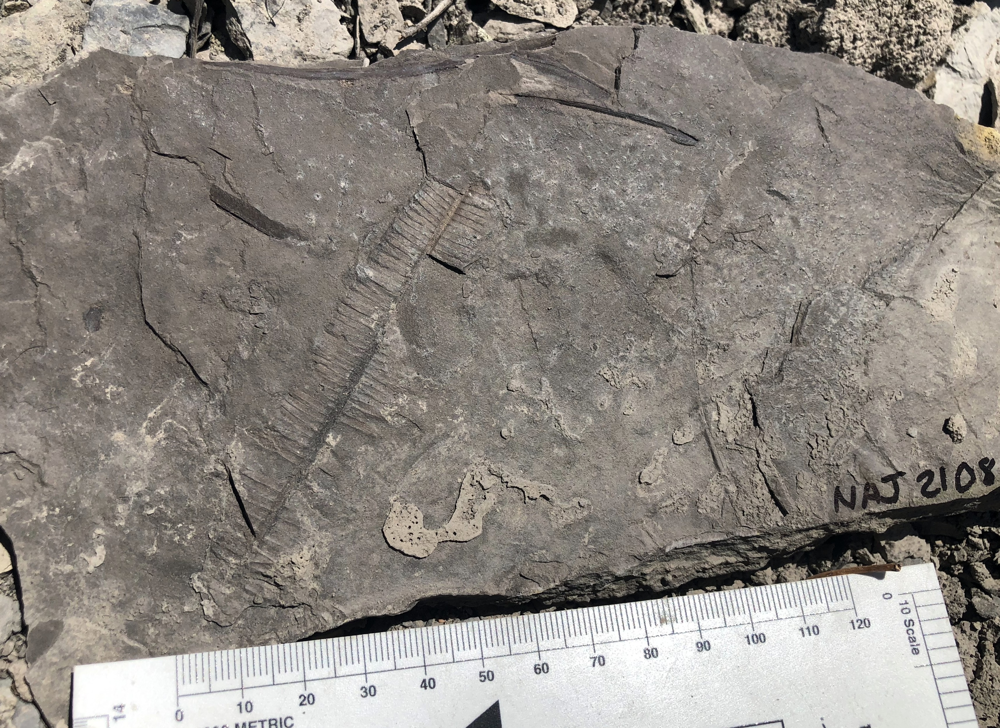
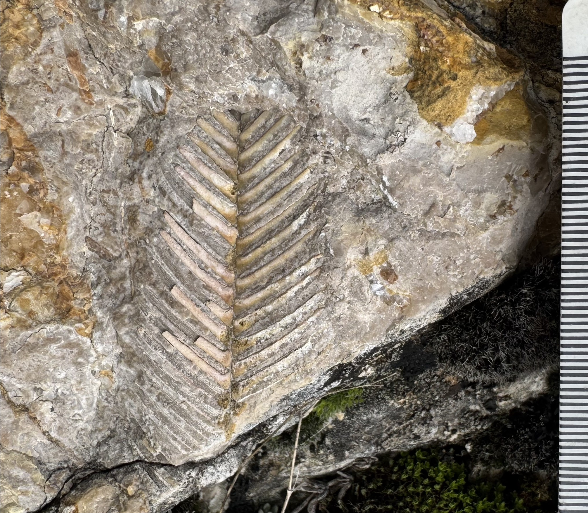
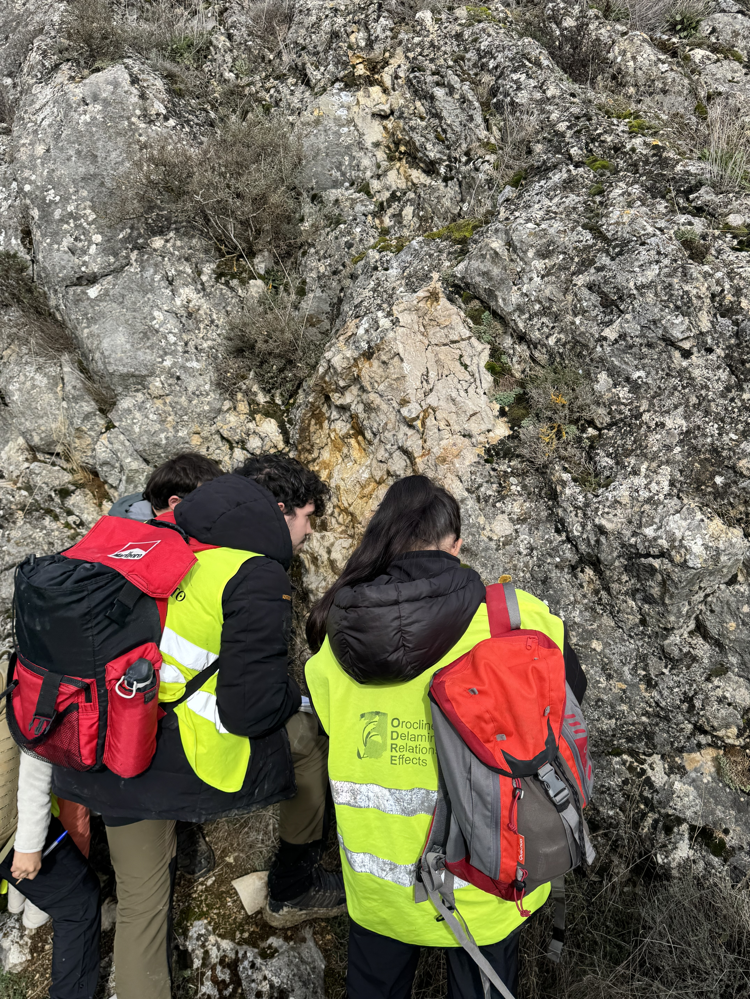

Thoughts on the age of the cycadophytes
While collecting in the lower part of the Cloverly Formation, I regularly encounter cycadophyte foliage, but the leaves I find tend to be small, and that makes me wonder just how cycad-like these plants really were. Knowlton (1916) found the same plants in the same beds where I now collect, though he thought he was in the Morrison Formation. They occur with typical Late Jurassic–Early Cretaceous ferns and conifers. Knowlton reported Nilsonia nigracollensis Wieland (1905) and “Zamites” arcticus Göppert.

In 1849 Adolphe Brongniart divided the history of plants into three periods: the reigns of the free-sporing plants (acrogens), the gymnosperms, and the angiosperms. He explained that early in the reign of the gymnosperms conifers predominated, but that later the cycads became predominant “by the number of species, their frequency and the variety of generic forms” (Brongniart 1849). Those Mesozoic “cycads” belong to at least two or three different groups: in addition to the true cycads, there were also the Nilssoniaceae and the Bennettitales.
True cycads have been around for a long time. The earliest definitive records are Permian (Gao and Thomas, 1989; Luthardt et al. 2023), but modern diversity is the result of recent diversification in the Cenozoic (Coiro and Seyfullah 2024). One of the best-known fossil cycads is Antarcticycas from the Middle Triassic of Antarctica (Smoot et al. 1985; Hermsen et al. 2009). In Europe, where the image of the age of cycads developed, it turns out that much of what Brongniart and others saw were bennettites and nilssonias. Brongniart’s cycads included leaves of Cycadites, Ctenis, Nilssonia, Zamites, Otozamites and Pterophyllum, and the trunks he called Mantellia, which William Buckland had called Cycadeoidea (Buckland 1828; Brongniart 1828). Of these, only Cycadites and Ctenis are confidently grouped with the Cycadales today.
Some authors consider the Nilssoniaceae to be extinct relatives of the Cycadales. This view seems to rest on Harris’s proposed whole-plant concept, which links Nilssonia leaves with the cycad-like reproductive organs Beania and Androstrobus (Harris 1964), an association also found in Iran and Afghanistan (Schweitzer et al. 2000), and on the observation that Nilssonia has haplocheilic stomata like cycads and other gymnosperms, rather than the syndetocheilic stomata of the Bennettitales. However, nilssonias seem to have had slender stems and deciduous leaves, and the shared stomatal character could well be ancestral, so I prefer to treat them separately.
For a long time many paleobotanists suspected that cycads and bennettitaleans were closely related. Wieland (1906, 1916) made that argument despite the many differences he documented, including the differences in how the leaves are vascularized, and the striking differences in the organization of the reproductive structures. On the other hand, some paleobotanists followed Arber and Parkin (1907), suspecting that bennettitaleans and angiosperms might be closely related, in part becauase of the bisporangiate reproductive structures. The characters once thought to be homologous between angiosperms and bennettitaleans are now thought to be convergent, so I tend to think of bennettitaleans as just as distinct as cycads, ginkgos, and angiosperms.
Pott and colleagues have thoroughly studied the cycadophytes of the Late Triassic (Carnian) Lunz flora of Austria and shown that there are about ten species of cycadophytes there (Pott et al. 2007a–d, 2008; Pott & Lukeneder 2026). Pterophyllum foliage is the most common, Nilssoniopteris is also comparatively common, Nilssonia sturii (which these authors placed in Cycadales) is the most common Nilssonia while the other species are relatively rare, and the cycad Pseudoctenis is rare. Based on cuticle morphology, Pott and colleagues group Pterophyllum, Anomozamites and Nilssoniopteris with the Bennettitales, and Nilssonia and Pseudoctenis with the Cycadales.
In the Yorkshire Jurassic, Harris listed Otozamites, Ptilophyllum, Zamites, Pterophyllum, Anomozamites, Nilssoniopteris and Dictyozamites among the Bennettitales, and Nilssonia, Ctenis, Pseudoctenis and Paracycas among the Cycadales (Harris 1964, 1969). Bennettitalean richness is much higher than cycads in the Yorkshire Jurassic,
In the Wealden flora of the Early Cretaceous (similar in age to the lower Cloverly Formation in Wyoming), Watson and Alvin (1996) listed Pseudocycas, Zamites, Ptilophyllum, Pterophyllum, Nilssoniopteris, Otozamites and Sphenozamites among the Bennettitales, and Becklesia, Nilssonia, Paracycas and Pseudoctenis among the Cycadales. The Nilssonia schaumburgensis (Dunker) leaves of the Wealden are very common and are about as wide as the similarly abundant N. nigracollensis of the Cloverly (Seward 1895). The main difference is that N. schaumburgensis has more divided leaves than the usually entire N. nigracollensis. True cycads were a minor part of the Wealden flora, but nilssonias and bennettites were common.
The age of cycadophytes in Europe and North America was one where bennettites were diverse and frequently abundant, cycads were widespread, and nilssonias were locally abundant.

The “Zamites” leaves I collect from the Cloverly Fm. don’t actually match the modern concept of Zamites. Following Harris (1969), and with Z. gigas proposed as the conserved type of the genus (Zijlstra & van Konijnenburg-van Cittert 2020), Zamites applies to pinnately compound leaves with alternate, lanceolate pinnae that attach to the upper surface of the rachis by a symmetrically constricted base, with an acute apex and veins that diverge slightly from the base. Fontaine (1905) and Knowlton (1916) applied the name “Zamites” arcticus to pinnately compound leaves with opposite, parallel-sided pinnae that extend about 8–10 mm from the rachis and are about 1.6 mm wide. They attach broadly to the top of the rachis, have blunt to semicircular apices and, as far as I can tell, parallel veins. Seward (1926, p. 92, pl. 7, fig. 43) suggested these might be Ptilophyllum, but Ptilophyllum pinnae typically have an asymmetrical base with a decurrent basiscopic margin (Harris 1969; Bose & Kasat 1972). Cuticle studies are probably needed to find the best genus name for this species.

The Nilssonia nigracollensis–“Zamites” arcticus assemblage of the lower Cloverly was part of the last age of cycadophytes. Although cycadophytes didn’t dominate everywhere, bennettitaleans and nilssonias were certainly conspicuous parts of Mesozoic floras before the angiosperms diversified in the mid-Cretaceous. That transition is dramatic in the Cloverly Formation, where you can walk up the same hill and find that cycadophytes are exceedingly rare in the Albian deposits where angiosperms occur. In some places, you can catch them together. In the Potomac Group of eastern North America, early herbaceous angiosperms grew near Zamites buchianus during the Aptian (Doyle & Hickey 1976; Upchurch 1984a, b; Jud & Hickey 2013; Jud 2015).
So, back to the question of stature. Many of the Williamsoniaceae have been reconstructed as shrubby, with divaricate branching patterns. Alfred Nathorst (1902) illustrated this for Wielandiella angustifolia, and Henry Thomas (1915) showed it for Williamsoniella coronata. Pott and McLoughlin (2014) nicely discussed this growth form as a possible adaptation to herbivory, a kind of high-wind xeromorphy, and an strategy for optimizing light capture. Similarly, Nilssoniaceae have been described with slender stems and long-shoot short-shoot morphology, growing either as shrubs or climbers. For example, Kimura and Sekido (1975), Spicer and Herman (1996), and Takimoto et al. (1997) showed Nilssoniocladus attached to short shoots, and Volynets (2010) showed Nilssoniocladus attached to a slender branch with regions of crowded and spaced leaf scars. I even found a specimen of a branch with leaf scars and long-shoot short-shoot morphology at my Cloverly site with the nilssonias that could be aNilssoniocladus, but no leaves are attached. It seems the slender, much-branched shrubby growth form, divaricate in the case of many Williamsoniaceae, was perhaps more typical than the pachycaulous trunks of Cycadeoidea and Monanthesia.UPDATE (Nov. 21): Recently, I got to visit a site with some bennettitalean leaves preserved in travertine deposits of the Aguilar Formation in norhtern Spain. The deposits are probably Late Jurassic, and there are several forms (Diéguez et al. 2009).


References
- Arber, E.A.N. & Parkin, J. 1907. On the origin of angiosperms. Journal of the Linnean Society of London, Botany 38: 29–80. https://doi.org/10.1111/j.1095-8339.1907.tb01074.x
- Bose, M.N. & Kasat, M.L. 1972. The genus Ptilophyllum in India. The Palaeobotanist 19: 115–145.
- Brongniart, A. 1828. Prodrome d’une histoire des végétaux fossiles. F.G. Levrault, Paris. 223 pp.
- Brongniart, A. 1849. Végétaux fossiles. In: d’Orbigny, C. (ed.), Dictionnaire universel d’histoire naturelle 13: 52–173. Also issued separately as Tableau des genres de végétaux fossiles considérés sous le point de vue de leur classification botanique et de leur distribution géologique. L. Martinet, Paris.
- Buckland, W. 1828. On the Cycadeoideae, a family of fossil plants found in the oolite quarries of the Isle of Portland. Transactions of the Geological Society of London, 2nd series, 2: 395–401.
- Coiro, M. & Seyfullah, L.J. 2024. Disparity of cycad leaves dispels the living fossil metaphor. Communications Biology 7: 328. https://doi.org/10.1038/s42003-024-06024-9
- Diéguez, C., Hernández, J.M. & Pujalte, V. 2009. A fern-bennettitalean floral assemblage in Tithonian-Berriasian travertine deposits (Aguilar Formation, Burgos-Palencia, N Spain) and its palaeoclimatic and vegetational implications. Journal of Iberian Geology 35 (2) 2009: 127–140
- Doyle, J.A. & Hickey, L.J. 1976. Pollen and leaves from the mid-Cretaceous Potomac Group and their bearing on early angiosperm evolution. In: Beck, C.B. (ed.), Origin and Early Evolution of Angiosperms. Columbia University Press, New York, pp. 139–206.
- Fontaine, W.M. 1905. [Descriptions of fossil plants from the Kootanie Formation of Montana.] In: Ward, L.F. Status of the Mesozoic floras of the United States, second paper. U.S. Geological Survey Monograph 48 (p. 306, pl. 73, figs 1–6 for “Zamites” arcticus).
- Gao, Z. & Thomas, B.A. 1989. A review of fossil cycad megasporophylls, with new evidence of Crossozamia Pomel and its associated leaves from the Lower Permian of Taiyuan, China. Review of Palaeobotany and Palynology 60: 205–223.
- Harris, T.M. 1964. The Yorkshire Jurassic Flora. II. Caytoniales, Cycadales and Pteridosperms. British Museum (Natural History), London.
- Harris, T.M. 1969. The Yorkshire Jurassic Flora. III. Bennettitales. British Museum (Natural History), London.
- Hermsen, E.J., Taylor, E.L. & Taylor, T.N. 2009. Morphology and ecology of the Antarcticycas plant. Review of Palaeobotany and Palynology 153: 108–123.
- Jud, N.A. 2015. Fossil evidence for a herbaceous diversification of early eudicot angiosperms during the Early Cretaceous. Proceedings of the Royal Society B 282: 20151045. https://doi.org/10.1098/rspb.2015.1045
- Jud, N.A. & Hickey, L.J. 2013. Potomacapnos apeleutheron gen. et sp. nov., a new Early Cretaceous angiosperm from the Potomac Group and its implications for the evolution of eudicot leaf architecture. American Journal of Botany 100: 2437–2449. https://doi.org/10.3732/ajb.1300250
- Kimura, T. & Sekido, S. 1975. Nilssoniocladus n. gen. (Nilssoniaceae n. fam.), newly found from the early Lower Cretaceous of Japan. Palaeontographica B 153:111–118.
- Knowlton, F.H. 1916. Note on a recent discovery of fossil plants in the Morrison formation. Journal of the Washington Academy of Sciences, 6: 180–181. https://www.jstor.org/stable/24523335
- Luthardt, L., Rößler, R. & Stevenson, D.W. 2023. Cycadodendron galtieri gen. nov. et sp. nov.: an Early Permian gymnosperm stem with cycadalean affinity. International Journal of Plant Sciences 184(9): 715–732.
- Nathorst, A.G. 1902. Beiträge zur Kenntnis einiger mesozoischen Cycadophyten. Kungliga Svenska Vetenskapsakademiens Handlingar 36(4): 1–28.
- Pott, C. & McLoughlin, S. 2014. Divaricate growth habit in Williamsoniaceae: unravelling the ecology of a key Mesozoic plant group. Palaeobiodiversity and Palaeoenvironments 94:307–325.
- Pott, C., Kerp, H. & Krings, M. 2007a. Morphology and epidermal anatomy of Nilssonia (cycadalean foliage) from the Upper Triassic of Lunz (Lower Austria). Review of Palaeobotany and Palynology 143: 197–217.
- Pott, C., Kerp, H. & Krings, M. 2007b. Pseudoctenis cornelii nov. spec. (cycadalean foliage) from the Carnian (Upper Triassic) of Lunz, Lower Austria. Annalen des Naturhistorischen Museums in Wien 109A: 1–17.
- Pott, C., Krings, M. & Kerp, H. 2007c. First record of Nilssoniopteris (Gymnospermophyta, Bennettitales) from the Carnian (Upper Triassic) of Lunz, Lower Austria. Palaeontology 50: 1299–1318.
- Pott, C., van Konijnenburg-van Cittert, J.H.A., Kerp, H. & Krings, M. 2007d. Revision of the Pterophyllum species (Cycadophytina: Bennettitales) in the Carnian (Late Triassic) flora from Lunz, Lower Austria. Review of Palaeobotany and Palynology 147: 3–27.
- Pott, C., Krings, M. & Kerp, H. 2008. The Carnian (Late Triassic) flora from Lunz in Lower Austria: paleoecological considerations. Palaeoworld 17: 172–182.
- Pott, C. & Lukeneder, A. 2026. A deltaic swamp forest: coastal wetland vegetation during the Carnian Pluvial Episode. In: Late Triassic Konservat-Lagerstätten within the Carnian Pluvial Episode. Topics in Geobiology 55, chapter 18. Springer.
- Schweitzer, H.-J., van Konijnenburg-van Cittert, J.H.A. & van der Burgh, J. 2000. The Rhaeto-Jurassic flora of Iran and Afghanistan. 12. Cycadophyta II. Nilssoniales. Palaeontographica Abteilung B 254: 1–63.
- Seward, A.C. 1895. Catalogue of the Mesozoic Plants in the Department of Geology, British Museum (Natural History). The Wealden Flora. Part II. Gymnospermae. British Museum (Natural History), London. 259 pp.
- Seward, A.C. 1926. The Cretaceous plant-bearing rocks of western Greenland. Philosophical Transactions of the Royal Society of London B 215: 57–175.
- Smoot, E.L., Taylor, T.N. & Delevoryas, T. 1985. Structurally preserved fossil plants from Antarctica. I. Antarcticycas, gen. nov., a Triassic cycad stem from the Beardmore Glacier area. American Journal of Botany 72: 1410–1423.
- Spicer, R.A. & Herman, A.B. 1996. Nilssoniocladus in the Cretaceous Arctic: new species and biological insights. Review of Palaeobotany and Palynology 92: 229–243. https://doi.org/10.1016/0034-6667(95)00111-5
- Takimoto, H., Ohana, T. & Kimura, T. 1997. Two new Nilssoniocladus species from the Jurassic (Oxfordian) Tochikubo Formation, Northeast Honshu, Japan. Paleontological Research 1(3): 180–187.
- Thomas, H.H. 1915. On Williamsoniella, a new type of bennettitalean flower. Philosophical Transactions of the Royal Society of London B 207: 113–148.
- Upchurch, G.R. 1984a. Cuticular anatomy of angiosperm leaves from the Lower Cretaceous Potomac Group. I. Zone I leaves. American Journal of Botany 71: 192–202.
- Upchurch, G.R. 1984b. Cuticle evolution in Early Cretaceous angiosperms from the Potomac Group of Virginia and Maryland. Annals of the Missouri Botanical Garden 71: 522–550.
- Volynets, E.B. 2010. A new species of Nilssoniocladus Kimura et Sekido from the Lower Cretaceous of the Markovsky Peninsula (southern Primorye). Paleontological Journal 44(10): 1348–1352. https://doi.org/10.1134/S0031030110100114
- Watson, J. & Alvin, K.L. 1996. An English Wealden floral list, with comments on possible environmental indicators. Cretaceous Research 17: 5–26.
- Wieland, G.R. 1905. Nilsonia nigracollensis n. sp. In: Ward, L.F. Status of the Mesozoic floras of the United States, second paper. U.S. Geological Survey Monograph 48, p. 319, pl. 73, fig. 15.
- Wieland, G.R. 1906. American Fossil Cycads. [Vol. I.] Carnegie Institution of Washington Publication 34. Washington, D.C.
- Wieland, G.R. 1916. American Fossil Cycads. Vol. II. Taxonomy. Carnegie Institution of Washington Publication 34. Washington, D.C.
- Zijlstra, G. & van Konijnenburg-van Cittert, J.H.A. 2020. (2778) Proposal to conserve the name Zamites (fossil Cycadophyta: Bennettitales) with a conserved type. Taxon 69: 1122–1123.